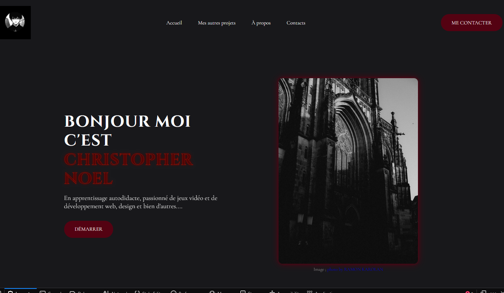

À propos de moi
Bonjour, je m'appelle Christopher Noel, j'ai 26 ans et je suis un développeur web passionné. J'ai commencé à apprendre le développement web en autodidacte en utilisant plusieurs ressources comme Youtube ,les sites web (MDN, W3Schools) et de l'AI et depuis, j'ai travaillé sur plusieurs projets personnels pour améliorer mes compétences. Je suis particulièrement intéressé par le développement front-end, mais j'aime aussi explorer le back-end et les technologies full-stack (Toujours en autodidacte et en apprentissage).
Bienvenue sur mon portfolio version 2
Présentation de mes compétences
En autodidacte, j'ai acquis des compétences en développement web, notamment en HTML, CSS et JavaScript. A travers divers projets, j'ai pu approfondir mes connaissances et améliorer mes abilities.
HTML
CSS
JavaScript
Node.js

Mes autres Projets
Panneaux de présentation
Création de panneaux de présentation pour Twitch. vidéo édit sur Captcut.
Panneaux de présentation
Création de panneaux de résaux sociaux en stream. vidéo édit sur Captcut.
Canva
Figma
Captcut
OBS
Présentation de mes compétences
Durant mon temps libre, j'ai exploré des outils de création graphique et de montage vidéo pour divers projets personnels. J'ai utilisé des plateformes comme Canva pour concevoir des éléments visuels, ainsi que Captcut pour créer des vidéos ou bien ajouter des effets à mes créations. J'ai également expérimenté avec Figma pour le design d'interfaces et OBS et twitch.
Services
En cours de développement...
Contactez-moi
✅ Message envoyé !
Je vous répondrai rapidement.